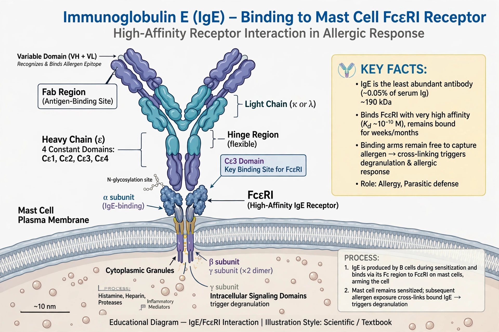

Immunoglobulin E (IgE) is a class of antibody found only in mammals. IgE is synthesised by plasma cells and consists of two heavy chains (epsilon) and two light chains. It is present in very low concentrations in blood but binds with high affinity to receptors on mast cells and basophils.

Immunoglobulin EWhen allergen cross-links receptor-bound IgE, mast cells degranulate, releasing histamine and other mediators — the basis of type I hypersensitivity reactions including hay fever, asthma and anaphylaxis. IgE also helps defend against parasitic worms.
IgE was identified in 1966–67 by Kimishige and Teruko Ishizaka and by Gunnar Johansson and Hans Bennich. Raised total IgE is associated with atopic disease. The monoclonal antibody omalizumab binds IgE and is used in allergic asthma and chronic urticaria. See also Immune system and Histamine intolerance.